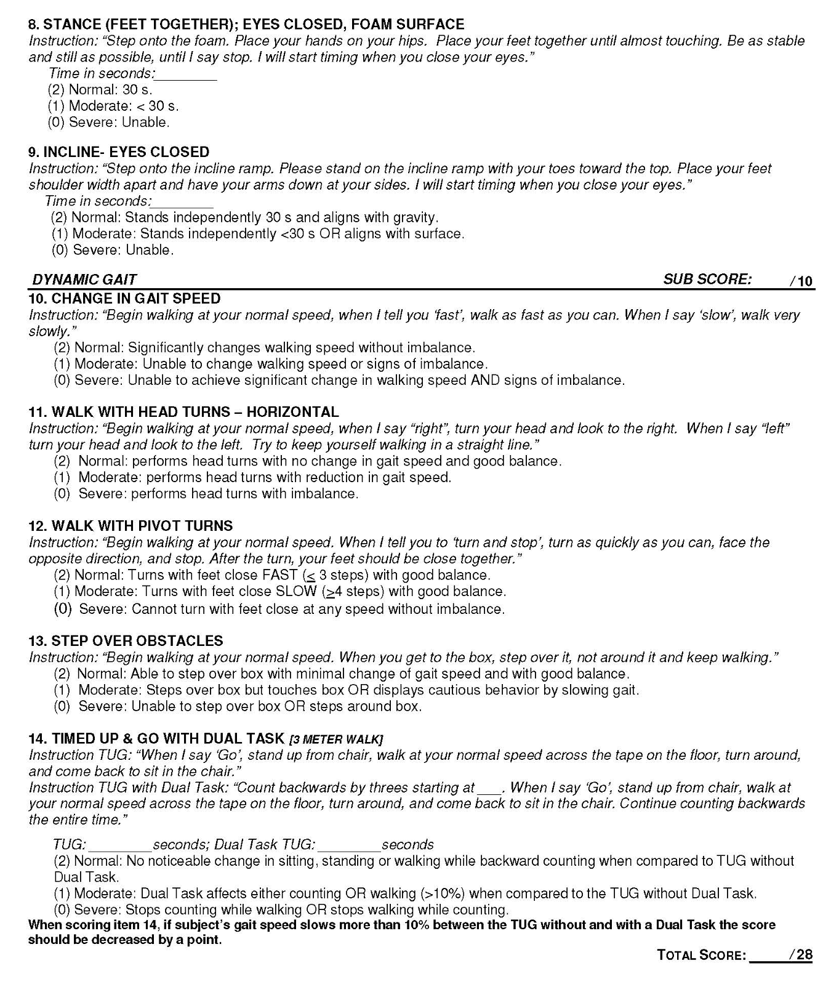
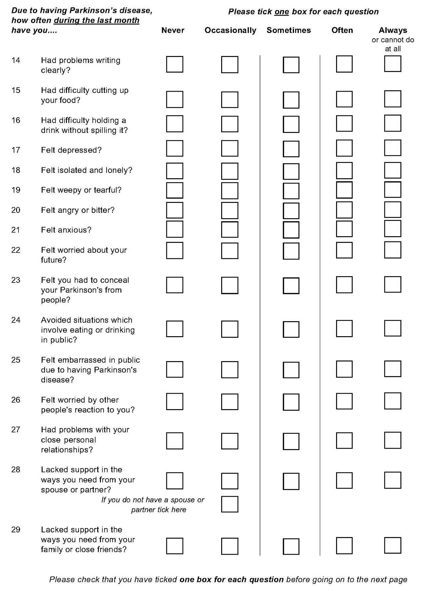

National Health and Nutrition Examination Survey (NHANES) Functional Status Survey
The NHANES survey is an established and routinely performed questionnaire that is designed to assess the health and nutritional status of adults and children in the United States through interviews and direct physical examinations. This particular survey focuses on functional status.
Instructor to ask: “I am going to read out some activities with which some people have some difficulty. Please tell me if you have no difficulty, some difficulty, much difficulty, are unable to do or never do these activities, when you are by yourself and without the use of aids” (read choices, probe if necessary).
Difficulty Codes
0 = No Difficulty | 1 = Some Difficulty | 2 = Much Difficulty | 3 = Unable to Do |
4 = Never Do | 5 = Don’t Know | 6 = Inappropriate
NHANES Survey
| Question | Category | Question | Score |
|---|---|---|---|
| 1 | DRESSING | Dress yourself including tying shoes, working zippers, and doing buttons? | |
| 2 | ARISE | Stand up from an armless straight chair (such as a dining room chair)? | |
| 3 | ARISE | Get in and out of bed? | |
| 4 | EATING | Prepare meals? | |
| 5 | EATING | Cut your meat? | |
| 6 | EATING | Lift a full glass or cup to your mouth? | |
| 7 | EATING | Open a new milk carton? | |
| 8 | WALK | Walk a quarter mile (2-3 blocks)? If code = 0 go Q13 | |
| 9 | WALK | Walk from one room to another (on the same floor)? | |
| 10 | WALK | Walk up and down at least 2 steps? | |
| 11 | HYGIENE | Get in and out of a bathtub? | |
| 12 | HYGIENE | Wash and dry your whole body? | |
| 13 | HYGIENE | Get on and off the toilet? | |
| 14 | DRESSING | Comb your hair? | |
| 15 | REACHING | Reach and get down a 5lb object (bag of sugar) from just above your head? | |
| 16 | REACHING | Bend down and pick up clothing? | |
| 17 | GRIP | Open jars that have been previously opened? | |
| 18 | GRIP | Use a pen or pencil to write with? | |
| 19 | ERRANDS | Get in and out of a car? | |
| 20 | ERRANDS | Run errands and shop? | |
| 21 | ERRANDS | Do light chores such as vacuuming? | |
| 22 | ERRANDS | Lift and carry a full bag of groceries? | |
| 23 | ERRANDS | Do heavy chores around the house or yard (washing windows, walls, and floors)? |
NHANES Scoring
The category score is the worst score the participant has for the questions in that category. For example,
Question 1: 1
Question 14: 2
Category score for Dressing (Q1, Q14) = 2
Any score of 4, 5, or 6 automatically becomes a score of 3 for the category scores. For example,
Question 2: 4 >>> 3
Question 3: 1
Category score for Arise (Q2, Q3) = 3
The Disability score is the average of the 8 categories, therefore the maximum disability score is 3
| Category | Questions | Score (0-3) |
|---|---|---|
| Dressing | 1, 14 | |
| Arise | 2, 3 | |
| Eating | 4, 5, 6, 7 | |
| Walking | 8, 9, 10 | |
| Hygiene | 11, 12, 13 | |
| Reach | 15, 16 | |
| Grip | 17, 18 | |
| Errands/Chores | 19, 20, 21, 22, 23 | |
| Disability Score | Average of 8 Categories |
Incidental and Planned Exercise Questionnaire


Mini Balance Evaluation Systems Test



PDQ-39 Questionnaire



Other Resources
These are some important web resources that you might use:
Home Exercise Program
Lancet series on Obesity
Lancet series homepage
CardioChek user manual (Lipids Lab)
ptsdiagnostics.com/wp-content/uploads/2018/09/ps-002461-en_rev._4_user_guide_cardiochek_pa.pdf